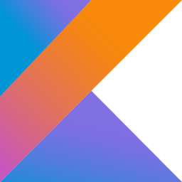
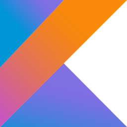
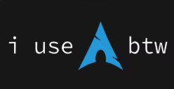
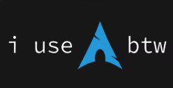

Sobre Mí
Estudiante de Ingeniería de Sistemas con enfoque en Machine Learning y desarrollo de software. Me apasiona crear soluciones eficientes mediante algoritmos y estructuras de datos, desde juegos de lógica hasta compresión de información y automatización de procesos.
Disfruto colaborar en equipo, aportando ideas y asegurando que cada proyecto avance de manera eficiente. Actualmente, colaboro como asistente informal en contaduría, donde he manejado datos sensibles y he trabajado en la automatización de procesos, como la generación de documentos para devoluciones de IVA.
Mis habilidades
Machine Learning y Análisis de Datos
Aplicación de técnicas de Machine Learning para el procesamiento y optimización de datos en diferentes entornos
Persistencia y resolución de problemas
Enfrento desafíos con determinación, obsesionándome hasta encontrar la mejor solución posible.
Trabajo en equipo y colaboración
Me comprometo plenamente con mis tareas dentro de un equipo, aportando ideas y asegurando que cada proyecto avance de manera eficiente
¿Qué estoy haciendo?
-
Analisis Numerico
Técnicas de optimización de errores y aproximación de datos, para mejorar la precisión del análisis.
-
Optimización y Simulación
Algoritmos de simulación para comunicación, optimizando el flujo de datos.
-
Tegnologias Emergentes
Uso de drones para modelar cambios en zonas específicas mediante análisis de imágenes y superposición de planos.
-
Tecnicas de Aprendizaje ML
Métodos para el análisis de datos y el entrenamiento de modelos con TensorFlow y Keras.
Lenguajes & Herramientas


 


 
